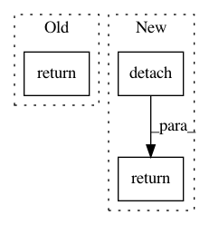

b0c0eb7b1f2ac9a983c550ee971cea275463d8fc,src/sdk/pynni/nni/compression/torch/builtin_pruners.py,L2FilterPruner,_get_mask,#L2FilterPruner#Any#Any#Any#,362
Before Change
threshold = torch.topk(w_l2_norm.view(-1), num_prune, largest=False)[0].max()
mask = torch.gt(w_l2_norm, threshold)[:, None, None, None].expand_as(weight).type_as(weight)
return mask
class FPGMPruner(RankFilterPruner):
After Change
mask_weight = torch.gt(w_l2_norm, threshold)[:, None, None, None].expand_as(weight).type_as(weight)
mask_bias = torch.gt(w_l2_norm, threshold).type_as(weight)
return {"weight": mask_weight.detach(), "bias": mask_bias.detach()}
class FPGMPruner(WeightRankFilterPruner):
In pattern: SUPERPATTERN
Frequency: 4
Non-data size: 3
Instances
Project Name: microsoft/nni
Commit Name: b0c0eb7b1f2ac9a983c550ee971cea275463d8fc
Time: 2019-12-23
Author: lanny@mail.hfut.edu.cn
File Name: src/sdk/pynni/nni/compression/torch/builtin_pruners.py
Class Name: L2FilterPruner
Method Name: _get_mask
Project Name: microsoft/nni
Commit Name: b0c0eb7b1f2ac9a983c550ee971cea275463d8fc
Time: 2019-12-23
Author: lanny@mail.hfut.edu.cn
File Name: src/sdk/pynni/nni/compression/torch/builtin_pruners.py
Class Name: L1FilterPruner
Method Name: _get_mask
Project Name: microsoft/nni
Commit Name: ac6f420f224c331af8bda16edd9700e4cadea7e0
Time: 2019-12-11
Author: lanny@mail.hfut.edu.cn
File Name: src/sdk/pynni/nni/compression/torch/builtin_pruners.py
Class Name: FPGMPruner
Method Name: calc_mask
Project Name: PetrochukM/PyTorch-NLP
Commit Name: 7b05db6f551e7260f76ff456c25c05de07882650
Time: 2018-05-05
Author: petrochukm@gmail.com
File Name: examples/awd-lstm-lm/utils.py
Class Name:
Method Name: repackage_hidden